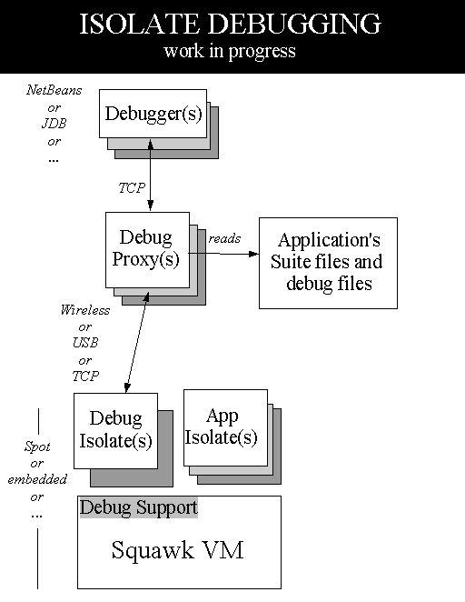

The architecture for Java-level debugging application running on the Squawk VM is a slightly modified version of the architecture for debugging applications running on the KVM. As such, this document is largely derived in parts from the document describing the KVM debugger architecture.
The Squawk VM provides facilities for plugging the virtual machine into third-party Java development and debugging environments that are compliant with the JPDA (Java Platform Debug Architecture) specification supported by Java 2 Standard Edition. Further information on the JPDA architecture is available here. Due to strict memory constraints, Squawk does not implement support for the JVMDI (Java Virtual Machine Debug Interface) or the full JDWP (Java Debug Wire Protocol) specification in JPDA. Instead, Squawk implements a subset of the JDWP known as SDWP (Squawk Debug Wire Protocol).
The SDWP was designed to be a strict subset of the JDWP, primarily based on the resource constraints imposed on Squawk. In order to make Squawk run with a JPDA compatible debugger, a debug agent (debug proxy) program is interposed between Squawk and the JPDA-compatible debugger. The debug agent allows many of the memory-consuming components of a JPDA-compliant debugging environment to be located on the development workstation instead of in Squawk, therefore reducing the memory overhead that the debugging interfaces have on Squawk and target devices.
At the high level, the Squawk debugger support consists of two parts:
The overall architecture for the Java-level debugging interface is illustrated below. The topmost box represents the JPDA-compliant debugging environment ("JPDA Debugger") running on a development workstation. The debugger is connected to the SDP that talks to the SDA on Squawk.
The debugger suite must be built with the bootstrap suite as it references parts of the core classes whose linkage information is subsequently stripped. As such, the building of the bootstrap suite will be something like the following:
|
There are three steps to starting a debug session:
The application to be debugged must be started under control of the SDA. Starting
the SDA with only the -h flag will cause it to list a usage message:
|
Here's an example of how to start an application com.sun.squawk.debugger.sda.TestApp (which
happens to be included in the debugger's suite) under the SDA:
|
The TestApp program sits in a loop, throwing and catching exceptions, initiating garbage collections
every now and then. Some JDB commands to try include catch java.lang.Throwable,
stop at tests.TestApp:66 and cont.
|
The proxy needs to find squawk class files for all classes that might be running in the
application being debugged. This is done by specifying a classpath using the -cp:
option. In the example below, replace "samples/j2meclasses" with the
path to your application's class files.
|
|
Here are a list of jdb commands that should work with Squawk:
threads [threadgroup] -- list threads
thread <thread id> -- set default thread
suspend [thread id(s)] -- suspend threads (default: all)
resume [thread id(s)] -- resume threads (default: all)
where [<thread id> | all] -- dump a thread's stack
wherei [<thread id> | all]-- dump a thread's stack, with pc info
up [n frames] -- move up a thread's stack
down [n frames] -- move down a thread's stack
print <expr> -- print value of expression
dump <expr> -- print all object information
eval <expr> -- evaluate expression (same as print)
classes -- list currently known classes
class <class id> -- show details of named class
methods <class id> -- list a class's methods
fields <class id> -- list a class's fields
stop at <class id>:<line> -- set a breakpoint at a line
clear <class id>:<line> -- clear a breakpoint at a line
clear -- list breakpoints
catch [uncaught|caught|all] <class id>|<class pattern>
-- break when specified exception occurs
ignore [uncaught|caught|all] <class id>|<class pattern>
-- cancel 'catch' for the specified exception
cont -- continue execution from breakpoint
list [line number|method] -- print source code
use (or sourcepath) [source file path]
-- display or change the source path
classpath -- print classpath info from target VM
monitor <command> -- execute command each time the program stops
monitor -- list monitors
unmonitor <monitor#> -- delete a monitor
read <filename> -- read and execute a command file
!! -- repeat last command
<n> <command> -- repeat command n times
help (or ?) -- list commands
version -- print version information
exit (or quit) -- exit debugger
<class id>: a full class name with package qualifiers
<class pattern>: a class name with a leading or trailing wildcard ('*')
<thread id>: thread number as reported in the 'threads' command
<expr>: a Java(tm) Programming Language expression.
Most common syntax is supported.
Important JDB commands that do NOT work:
kill <thread id> <expr> -- kill a thread with the given exception object
interrupt <thread id> -- interrupt a thread
set <lvalue> = <expr> -- assign new value to field/variable/array element
locals -- print all local variables in current stack frame
threadgroups -- list threadgroups
threadgroup <name> -- set current threadgroup
stop in <class id>.<method>[(argument_type,...)]
-- set a breakpoint in a method
clear <class id>.<method>[(argument_type,...)]
-- clear a breakpoint in a method
watch [access|all] <class id>.<field name>
-- watch access/modifications to a field
unwatch [access|all] <class id>.<field name>
-- discontinue watching access/modifications to a field
trace methods [thread] -- trace method entry and exit
untrace methods [thread] -- stop tracing method entry and exit
step -- execute current line
step up -- execute until the current method returns to its caller
stepi -- execute current instruction
next -- step one line (step OVER calls)
exclude [<class pattern>, ... | "none"]
-- do not report step or method events for specified classes
lock <expr> -- print lock info for an object
threadlocks [thread id] -- print lock info for a thread
pop -- pop the stack through and including the current frame
reenter -- same as pop, but current frame is reentered
redefine <class id> <class file name>
-- redefine the code for a class
disablegc <expr> -- prevent garbage collection of an object
enablegc <expr> -- permit garbage collection of an object